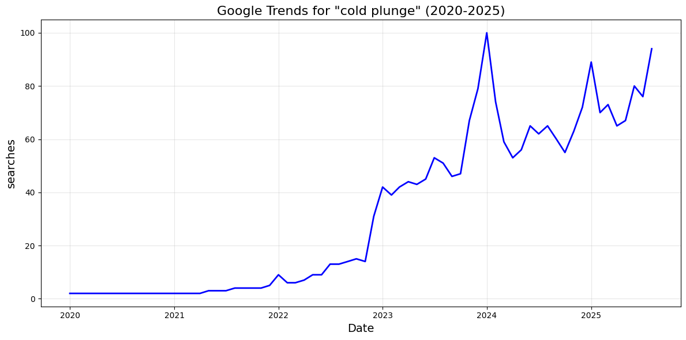
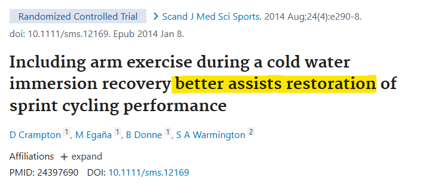
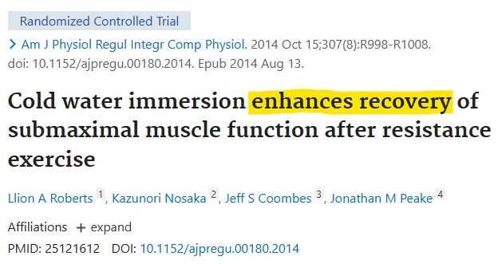
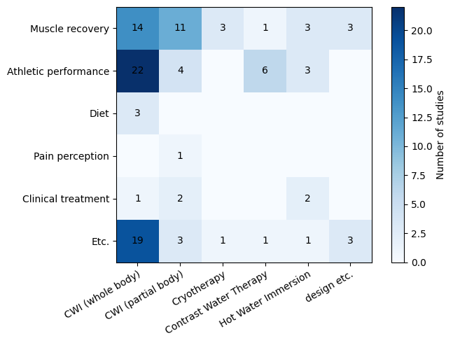
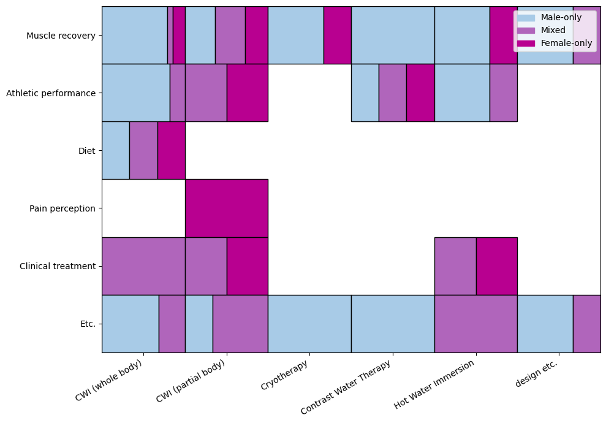

#Coldplunge—better known as cold showering—is everywhere on my For You Page. It seems like I’m not alone, as Google searches for “cold plunge” have surged by 3862.5% since 2020. On YouTube, TikTok, Instagram, and Reddit, cold plunging has gone from niche recovery ritual to mainstream “biohack”.
Endorsed by celebrities and my favorite wellness influencers, cold plunging is said to offer benefits like enhanced recovery, boosted mood, and weight loss, supposedly backed up by scientific research and numerous controlled trials.



This was enough to convince me to give it a try. But the moment I stepped in the tub, immersing myself in the ice cold water, there was no shivering, no promised calorie burn like the health blogs claimed; just a pure, overwhelming state of stress. As I endured what felt more painful than therapeutic, I thought to myself: maybe this trend isn't for me.
Somehow, the scientific evidence behind the flashy YouTube thumbnails and influencer tubs may not be as inclusive as the marketing makes it seem.
In fact, out of 212 PubMed trials on the effects of cold therapy, more than 50% excluded women from its methodology entirely.
So how does advice based on male-centric studies become universal wellness wisdom? Why are female bodies left out of the research, and does this go beyond a mere harmless internet trend?
The Flow of Information: from the Lab to Your Feed.
Cold plunging didn’t land on my For You Page arbitrarily. It traveled through a lengthy, complex citation pipeline: from controlled trials in academic journals, to systematic reviews, to mainstream health blogs, to celebrity news and TikTok videos. Somewhere along that path, critical details—like who the studies were actually conducted on—disappeared.
I began tracing this pipeline through a story in The Joseon Ilbo. The article covered a Vogue video featuring Jennie from Blackpink introducing her nightly cold plunging routine.
Each of these lines represent a quote from the bubble above, connected to the source of the claim, categorized by its stance on cold plunging:
beneficial,
harmful,
or neutral.
For example, The Joseon Ilbo article lists several benefits—such as reduced pain, improved circulation, and muscle recovery—citing EveryDay Health, A U.S.-based medical newsletter.
EveryDay Health is generally reputable, with its articles medically reviewed and citations drawn from scientific journals, while remaining accessible to the general public.
EveryDay Health’s article considers both the benefits and potential harms of cold plunging, but leans more positive.
For example, it mentions benefits such as reduced pain and fatigue, and improved recovery after high-intensity exercise.
These claims are cited from a 2022 systematic review published in Sports Medicine that examined 52 studies.
A review paper is a type of scientific study that analyzes findings on a single topic by synthesizing results from multiple previous studies, represented here as an orange dot.
Each cold-water-immersion trial (a controlled experiment designed to test specific effects) is represented as a dot, colored on a scale from
blue
to
pink:
the pinker the dot, the greater the female participation rate.
You’ll notice a sea of blue dots. Out of those 52 studies, I had access to 32 trials. And out of those 32 trials, 22 excluded women entirely.
And this isn’t unique to this one review article.
Let’s look at the 2025 review article looking into the doses of cold water immersion, which analyzes 55 studies. I could access 31 trials.
And out of those 31 trials, 23 excluded women entirely.
Each review article, colored orange, shows a similar pattern.
Hover over a dot to see its source. Hover over a line to read the quoted citation.
So when EveryDay Health claims “cold plunging may help relieve pain,” or “A cold water plunge may temporarily make you feel invigorated,” that conclusion largely reflects male physiology. At the research level, gender gaps are documented, if you go looking for them. At the newsletter level, this information is omitted. And by the time this advice hits celebrity news or your For You Page, the message becomes universal.
But is this merely one slightly flawed citation chain, or part of a larger, systemic pattern? If gender gaps can disappear so easily on the way from trials to journals to celebrity news, what do things look like at the source?
Unpacking the Data
Stepping outside the headlines, I collected 426 PubMed articles, with abstracts available, that conducted clinical and randomized trials, tagged “cold-water-immersion”.
Non-human experiments, cold water immersion as a pain stimulus, and experiments focused on heated water immersion were excluded during the data clean up process.
That left me with 212 articles, all with a focus on therapeutic and physiological effects of cold therapy.
And out of 212 studies,
143 consisted only of men,
69 had both male and female participants,
and only 11 were female-focused studies.
Additionally, 13 did not include any information about the gender of participants.
Beyond Who Was Studied: What Was Tested?
Knowing who was included in cold water immersion research is only part of the story.
The equally important question is: what exactly were researchers testing for?
Beyond merely “Were women included?”, but “Does this specific method help me with my specific needs?”
To explore this, studies were categorized along two dimensions1:
Method of cold therapy: full-body immersion, partial immersion, cryotherapy with nitrogen air, hot water immersion, and other variations.
Intended effect: outcomes such as muscle recovery, athletic performance, diet, pain perception, clinical treatment, and more.
1Note on methodology: These categories were developed after manually reviewing all 11 of the female-only research papers.
A random sample of 59 additional studies was then categorized, for a total of 70.
Studies with methods or effects outside the listed groups were classified as "etc."
The heatmap therefore reflects only this subset of the 212 available studies.

Total categories: each study is placed into one or more cells based on method and intended effect.
Even within the same category, results often disagree. For example:
Both of these trials examined whole-body cold-water immersion for athletic performance, yet they reached opposite conclusions.
Differences in conditions—temperature, duration, or even interpretation—likely explain the contrast.
This is the normal process of science: individual studies may conflict, but over time the body of work evolves, refining its methods and producing more nuanced insights.

Each box is subdivided to show the ratio of male-only, mixed, and female-only studies within that category.
When we layer on sex representation, the imbalance becomes stark.
Whole-body cold water immersion and cryotherapy—the two most common methods when influencers mention a "cold plunge routine"—are overwhelmingly male-focused.
By contrast, 7 out of the 11 female-only studies observed the effects of partial-body immersion.
Three heatmaps comparing male, mixed, and female-only studies.
Female-only research often begins from scratch. As the few rare female-only studies state:
Because there’s so little historical foundation, even a single new study is often the “first” of its kind,
which makes it difficult to establish nuanced recommendations, like optimal temperatures, durations, or mechanisms, for women’s bodies.
Entire method and effect categories have no female-focused studies at all.
For example, no research on female-focused research exists regarding cold immersion for hyperthermia treatment, sleep, or key physiological mechanisms like vasodilation, oxygenation, and parasympathetic activity, despite these being widely used terminology in wellness media.
Moreover, when studies do discuss such mechanisms in their introduction, supported citations are older research that mostly reflect male physiology.
Change in sympathetic activity, cardiovascular functions and plasma hormone concentrations due to cold water immersion in men, 1997
So while cold plunging spreads virally through celebrity culture and wellness newsletters,
the underlying research base reflects a much deeper gender skew.
And this imbalance is not unique to cold therapy: it mirrors a broader underrepresentation of female participants in sports and exercise medicine.
Which means when I ask, “Is cold plunging good for me?”—the most honest answer is still: we don’t know yet.
Hover over a block to see details.
The Timeline of Cold Plunge Science
While the number of cold water immersion studies published peaked around 2014, there has been research that included women throughout the years since 1998 (though only a minority).
2009 was a strange peak year for women-centered studies: four of the seven papers published were 100% female cohorts.
But reading them closely, most of these studies treated “female” only as a recruitment detail. The consideration of sex as a variable—or the hormonal context of women’s physiology—appears limited.
The single outlier came from Effect of stress on pain perception in young women, 2009 Ironically, it was the one psychology study that noted hormonal effects, while the three studies on muscle recovery studies said nothing at all.
They state,
“Since all subjects were females, PPT and PTOL values may have been influenced by hormonal effect of the ovulatory cycle…[however] there are studies indicating that the influence of the ovulatory cycle on pain perception is minimal."
Perhaps one may take this as proof that sex differences are negligible.
But recent studies have started to acknowledge this, as they are beginning to openly call out the underrepresentation of women in sports medicine studies, framing their designs as correctives to a male-dominated literature.
One 2025 trial begins its introduction with the importance of studying women. “Female participants are significantly underrepresented in sports and exercise medicine research, including studies related to CWI and HWI. Hormonal status (e.g., estrogen levels) and differences in body composition… could potentially contribute to divergent outcomes.”
This trend of acknowledgement seems to have started in 2020, by a study comparing the effect of various methods of cold therapy on muscle recovery in females.
“To our knowledge, no study has examined the physiological responses or the recovery between PBC, CWI, and a control treatment in females. This is consistent with the significantly under‐represented female participants in the wider sport and exercise medicine literature.”
It compared traditional cold-water immersion with cryotherapy, a treatment involving extremely low temperatures of nitrogen gas, and concluded that the physiological effects of these two methods were generally similar, noting, “These data contrast our previous findings in males utilizing the same exercise and recovery intervention.”
They acknowledged their limitations, “Due to logical constraints, the stage of menstrual cycle was not controlled for. Different estrogen levels of the participants might have contributed to the different results in the present study…In humans, the protective effect of estrogen levels and the influence of oral contraception on muscle damage are less clear, but it is likely that the protective effect of estrogen might have a significant impact on the outcome.” And encouraged future studies to take into account.
blah blah blah
Raised awareness of the lack of female-centered research in cold water immersion is part of a larger reckoning in sports and exercise science. Recent studies not only acknowledge that women have long been underrepresented, they also explain why: the technical difficulty of accounting for hormonal variability across the menstrual cycle. But if that variability is large enough to complicate experimental design, it’s also large enough to matter in practice. In other words, the very thing used as a reason to exclude women is itself evidence that we need more research—not less.
Cold plunges may have gone viral for their universal appeal, but the science shows us they are not universal, or not yet. The question now is whether research can keep pace with practice—whether the next wave of studies will reflect the people actually stepping into the ice bath.